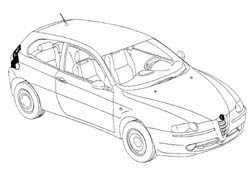
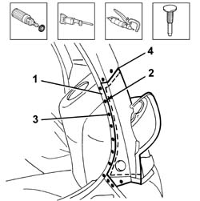
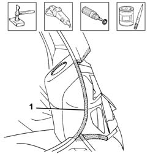
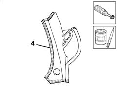
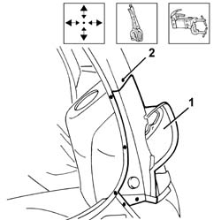
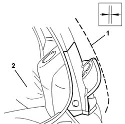
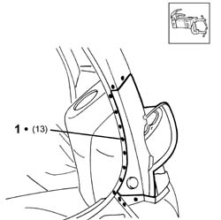
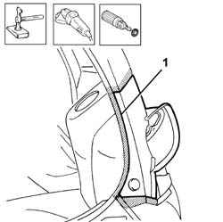
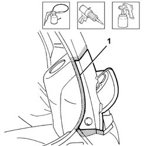

7210E75 tail light seat
- Path
- Procedures > 72 PANELS AND FRAME > 7210 REMOVING REFITTING > 7210B structure elements-central and rear part > 7210E75 tail light seat
- Kind
- repair procedure (removal / refitting; the operation number is the code)
- Applies to
- all engines; all production periods
- Interactive page
- https://sloeber94.github.io/elrnDB-a147/en/#/3025968
Applies to: all engines; all production periods
 Removing
Removing
 Refitting
RefittingCheck if any of the connected parts are deformed by checking body alignment dimensions. Use appropriate measurement tools (reference rigs, templates or gauges).
Straighten the body if necessary.

Applies to: all engines; all production periods
1. Use a rotary brush to clean the panel edges in order to expose the weld spots.
2. Cut along the the line shown using the hacksawing machine.
3. Use a chamfering machine to crop weld points around the edge of the light seat.
Use a chisel and mallet to remove spots drilled previously.
4. Remove the cut edges from the headlamp seat.

Applies to: all engines; all production periods
Straighten the car edges using a mallet and profiled stake.
Use a grinding wheel to remove the weld spot residues.
Use a rotary brush to clean treated areas.
1. Apply the electric weld paint finish.

Applies to: all engines; all production periods
1. Use a rotary brush to remove the corrosion-proofing from the areas shown in the figure.
Apply electrogalvanised paint on the newly-treated eges.

Applies to: all engines; all production periods
Refitting
Removing1. Position the tail-light seat on the car correctly using the self-locking grippers.
2. Tack the part by carrying out some spot welds.

Applies to: all engines; all production periods
1. Position the rear wing.
2. Fit the tail-gate.
Check alignment and gaps around the edges, then remove the rear wing and the tail-gate.

Applies to: all engines; all production periods
1. Use a spot welder to weld the areas shown in the figure.

Applies to: all engines; all production periods
Correct any deformations in the panel using a profiled stake and mallet.
1. Use a grinding wheel to level the welds.
Use a rotary brush to clean the newly-welded areas.

Applies to: all engines; all production periods
1. Apply rust-proofing to newly-welded areas.
Seal the joint lines between the part and the car.
Apply paint.

Applies to: all engines; all production periods